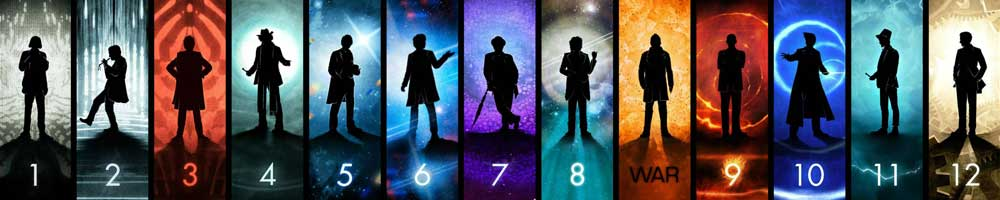

|  |
| Home | The Doctors | The Companions | The Villians | Show History |
|
|
Noel ClarkeNoel Anthony Clarke (born 6 December 1975) is an English actor, screenwriter and director from London. He is known for playing Wyman Norris in Auf Wiedersehen, Pet and Mickey Smith in Doctor Who.[1] Clarke appeared in and wrote the screenplay for Kidulthood and wrote, directed and starred in the sequel, Adulthood,[2] which gained £1,209,319 from the opening weekend of its release.[3] Clarke studied Media at the University of North London before going on to take acting classes at London's Actors Centre.[4] Clarke won the Laurence Olivier Award for Most Promising Performer in 2003 and was awarded a BAFTA Orange Rising Star Award in 2009.[5] |
Brendan Davey Monica DuCong'e Erik Eyler Kayleen Garcia Katherine Hyche Ryan Moeller |
Christine O'Brien Dilman Alex Recinos Julia Schwartz Madeleine Schwartz Ann Marie Skjold Ashly Wilkins |
[Reference Links] |